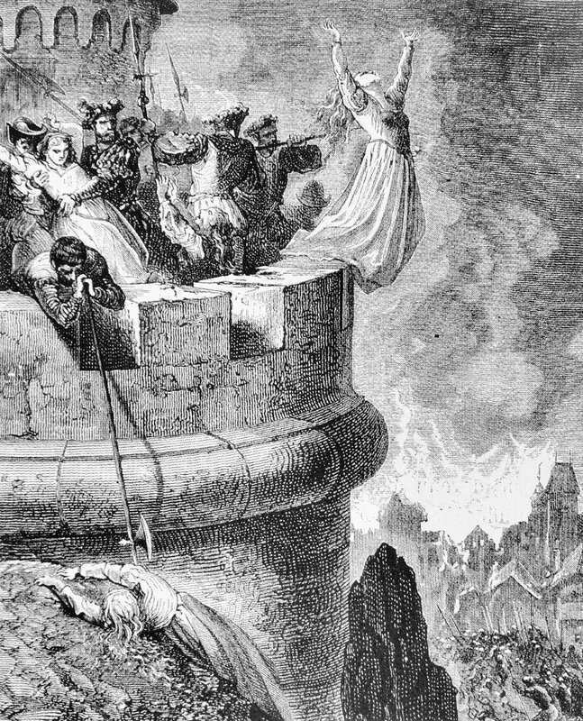
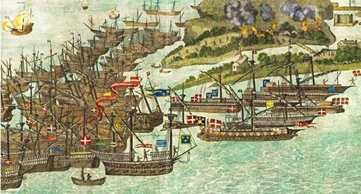
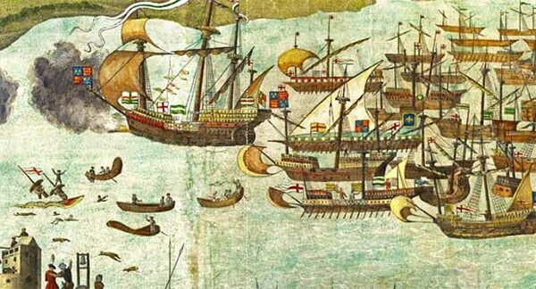
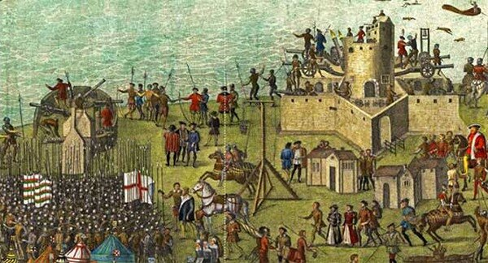

Франциск I, после мирного договора в Крепи, заключенного с Испанией 18 сентября 1544 года, избавившись от бремени войны с Карлом V, сконцентрировал усилия своего флота на боевых действиях против Англии. Используя в качестве прикрытия события в Шотландии (мы о них писали ранее, когда рассказывали о жизни Генерала галер Леона Строцци), король Франции решил осуществить масштабную морскую десантную операцию с целью вторжения на английскую территорию.
Согласно указу короля о проведении операции против Англии (указ был подписан в Фонтенбло 22 января 1544 года; пусть нас не смущает эта дата – начало Нового года во Франции с 1 января было введено лишь в 1564 году королем Карлом IX) командование операцией было возложено на маршала и адмирала Франции Клода д’Аннебо (Claude d'Annebault; написание на русском языке выбрано как наиболее распространенное в нашей исторической литературе; возможно, правильнее было бы Анбо, как это принято для названия соответствующей коммуны Annebault в департаменте Кальвадос).
Адмирал Клод Аннебо. Портрет исполнен в 1535 г. Франсуа Клуэ, крупнейшим французским художником-портретистом эпохи Возрождения, работавшим при дворе короля Франциска I (оригинал в Musee Conde, Chantilly, France)

Резня в Мерендоле. С гравюры Гюстава Доре
(до 1886 г.)
Около тридцати поселений в окрестности Мерендоля было предано огню. Антуан Эскален не забывал и о основной своей задаче – подготовить галеры к атлантическому походу – и несколько сот наиболее крепких религиозных отступников было захвачено для использования в качестве гребцов для этих галер.
Когда Франциск умер и трон короля Франции занял Генрих II, он предпринял расследование бойни в Мерендоле, которое повлекло тяжкие испытания для Полена. Об этом расскажем позже. А сейчас вернемся к походу на Англию.
Вот как об этом пишет известный французский историк Жак Огюст де Ту (1553-1617) в «Истории своего времени»( Historia sui temporis):
«Король снарядил флот под командованием адмирала д’Аннебо… В Онфлёр пришли 25 галер, которыми командовал капитан Полен де Лагард. Только он мог оказаться способным управлять кораблями, которые ранее не выходили за Гибралтар, в суровых условиях Атлантики. Королевский флот состоял из трехсот кораблей, на борту которых находилось восемь тысяч солдат… Д’Аннебо находился на флагманском корабле флота в центре ордера с тридцатью кораблями, построенными в линию фронта. Барон де Лагард находился в авангарде со своими галерами. Французы с ходу взяли остров Уайт, расположенный напротив Портсмута, крупного города Англии… Во главе французов были Строцци, де Таис, Тристан де Монне и капитан Полен».

Не всё в этом описании соответствует действительности. Как мы писали раньше, первыми в Атлантику вывел свои галеры французский Генерал галер Прежан де Биду. Об этом же пишет и Кастельно (Castelneau). Ссылаясь на Нострадамуса, он замечает, что данный проход французских галер через Гибралтар явился первым после прохода 1512 года. Он пишет, что барон де Лагард «особенно отличился 15 августа 1545 года, атаковав флот англичан и обратив его в бегство, применив свое профессиональное мастерство и выиграв ветер. Это происходило на глазах адмирала д’Аннебо, который не мог воссоединиться с остальным флотом и вынужден был лишь салютом со своих кораблей приветствовать опыт, мастерство и личные качества этого великого капитана».
Помимо французских галер, пришедших из Средиземного моря, в отряд барона де Лагарда были включены шесть новых галер, построенных на верфях Гавра и Руана, под командованием рыцаря Мальтийского ордена Pierre de Blacas d'Aulps, назначенного Капитан-генералом галер Понанта. Флагманская галера командующего атлантическим галерным флотом – la Capitane, – которая носила название la Couronne – своим аскетическим стилем и отсутствием излишеств находилась в разительном контрасте с флагманом барона де Лагарда la Réale. Но Réale поражала не только своим богатым убранством (она была обтянута «de drap d'or doublé de satin cramoysi, avec cinq parasolz de mesmes drap » -«полотнищем из темно-малинового атласа с накладным золотом, и имела пять тентов из такого же полотна»), но и боевыми качествами: она могла взять на борт, помимо экипажа и гребцов, 490 солдат с вооружением.
Перед английским флотом встала очень сложная задача. Во-первых, ему необходимо было поддерживать снабжение своих войск, захвативших Булонь; во-вторых, поддерживать боеспособность экспедиционного корпуса в Шотландии; и, наконец, в-третьих, всеми силами противодействовать возможной высадке французов на побережье Англии. Во всех портах южного побережья Англии была проведена мобилизация судов для помощи военному флоту.

Английский флот в Соленте (1545, автор неизвестен)
В июле 1545 года французы завершили высадку десанта но остров Уайт и их корабли подошли к проливу Солент, отделяющему остров от материка. Произошло несколько мелких столкновений, однако до генерального сражения дело не дошло: французы не могли войти в пролив, имеющий развитую систему береговой обороны, а англичане не пытались выйти из пролива, пока не подует достаточной силы ветер, который сведет на нет преимущество французского гребного флота перед парусным флотом англичан.

Береговая оборона в проливе Солент (1545,автор неизвестен)
Противники выжидали. И тут вмешался посторонний фактор, так часто меняющий все планы военных кампаний того времени: на французских кораблях началась эпидемия чумы.
В середине августа французы отступили.
Продолжим в следующий раз.